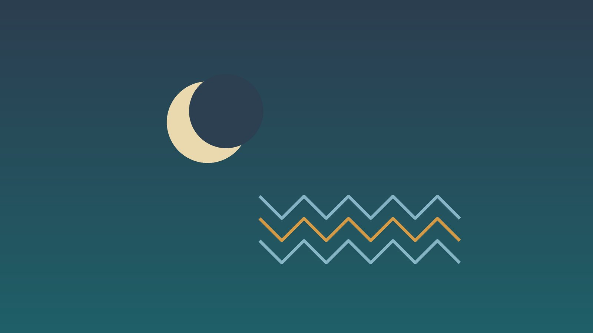

건강 칼럼 · 두통·얼굴·신경 · 인천 하지불안증후군 한의원
밤만 되면 다리가 근질거려 잠 못 든다면, 하지불안증후군 한방 관리

나의 다리 불편, 이런 모습인가요?
- 가만히 앉아 있거나 누우면 다리를 움직이고 싶어 참기 어렵다
- 다리 속이 근질거리거나 벌레가 기어가는 듯, 저릿하게 당긴다
- 걷거나 다리를 주무르면 그때만 나아진다
- 낮보다 저녁과 밤에 훨씬 심하다
- 잠들기 어렵거나, 자는 동안 다리를 차서 가족이 깬다
- 영화관, 비행기, 장거리 버스처럼 오래 앉아 있는 자리가 괴롭다
이 체크리스트는 진단 도구가 아니라 상담이 필요한지 가늠해 보는 참고용입니다.
하지불안증후군은 어떻게 진단하나요?
국제 하지불안증후군 연구회(IRLSSG)의 진단 기준(2014년 개정)은 다섯 가지를 모두 만족할 때 진단합니다. 첫째, 다리를 움직이고 싶은 충동이 대개 불쾌한 감각과 함께 생긴다. 둘째, 쉬거나 가만히 있을 때 시작되거나 심해진다. 셋째, 걷거나 스트레칭하면 움직이는 동안 부분적이거나 완전히 나아진다. 넷째, 저녁이나 밤에 심해진다. 다섯째, 쥐가 나는 근육 경련, 자세 때문의 불편, 정맥 질환, 관절염 같은 다른 이유로만 설명되지 않는다는 것입니다.
원인은 뇌의 도파민 기능과 철분 대사의 이상이 중요한 것으로 알려져 있습니다. 그래서 철 결핍, 임신, 만성 콩팥병이 있으면 잘 생기고, 가족력이 있는 경우도 많습니다. 미국수면의학회(AASM)의 치료 지침은 혈청 페리틴이 75 µg/L 이하이거나 철 포화도가 20% 미만이면 철분 보충을 고려하도록 권합니다. 일반 빈혈 검사에서 정상이라는 말을 들었어도 페리틴은 따로 확인해야 하는 이유입니다. 또 진정 작용이 있는 항히스타민제(감기약, 수면 유도제 일부), 일부 항우울제, 항정신병약, 메토클로프라미드 같은 구역질약은 증상을 악화시킬 수 있습니다.
하지불안이 아닐 수 있는 신호
- 한쪽 다리만 갑자기 붓고 아프며 열감이 있다(혈전 의심)
- 다리 저림이 허리 통증과 함께 다리 아래로 뻗친다
- 발끝부터 양쪽으로 저리고 감각이 무디다(말초신경병증 의심)
- 도파민 계열 약을 먹는데 증상이 더 이른 시간에, 팔까지 번진다
- 임신 중이거나 콩팥 질환으로 투석 중이다
- 잠을 못 자 낮에 졸음운전이 걱정될 정도다
한쪽 다리가 갑자기 붓는 것은 혈전일 수 있어 바로 병원에 가야 합니다. 도파민 작용제를 오래 쓰다 증상이 오히려 심해지고 일찍 시작되는 현상(증강)은 약 조정이 필요하므로 처방 의사와 상의하세요. 허리 디스크, 당뇨병성 신경병증처럼 비슷해 보이는 질환은 치료가 다릅니다.
한의학은 하지불안증후군을 어떻게 보나요?
하지불안증후군이라는 이름은 고전에 없지만, 한의학은 다리의 감각과 움직임을 혈(血)과 근(筋)의 관계로 설명했습니다. 『황제내경』 소문 오장생성편에는 '사람이 누우면 혈이 간으로 돌아가고 … 발이 혈을 받아야 걸을 수 있다(人臥血歸於肝 … 足受血而能步)'는 구절이 있습니다. 밤이 되어 혈이 안으로 모일 때 다리의 힘줄이 충분히 적셔지지 못하면 가만히 있지 못하고 꿈틀거린다고 해석할 수 있습니다.
그래서 한의학은 이 질환을 혈이 부족해 힘줄이 메말라 생기는 혈허(血虛), 나이 들며 진액이 줄어든 간신음허(肝腎陰虛), 찬 기운과 습기로 다리의 흐름이 막힌 상태, 스트레스로 기운이 뭉쳐 마음이 들뜬 상태로 나누어 봅니다. 현대 의학이 철분 부족과 수면을 중시하는 것처럼, 한의학도 혈을 보태고 밤의 잠을 편하게 하는 데 초점을 둡니다.
나의 다리 불편은 어떤 유형일까?
1. 혈허근급(血虛筋急) 혈이 모자라 당기는 유형
- 이런 분에게 많아요
- 생리량이 많거나 출산 뒤, 철분이 부족한 분
- 나타나는 모습
- 저녁이면 종아리 속이 당기고 근질거리며 쥐도 잘 난다
- 함께 오는 몸의 신호
- 어지럼, 손발 저림, 얼굴이 창백함, 손톱이 잘 깨짐
- 진찰에서 보이는 모습
- 혀가 연하고 맥이 가늚
- 치료 방향
- 혈을 보태 힘줄을 부드럽게 하는 방향 (사물탕·작약감초탕 계열)
- 오늘부터 해 볼 것
- 페리틴 수치를 확인하고 붉은 살코기, 녹색 채소를 챙기세요.
2. 간신음허(肝腎陰虛) 밤에 화끈거리는 유형
- 이런 분에게 많아요
- 중년 이후, 갱년기 전후의 분
- 나타나는 모습
- 밤에 다리가 화끈거리고 이불 밖으로 내놓고 싶다
- 함께 오는 몸의 신호
- 입 마름, 식은땀, 허리·무릎 시큰거림
- 진찰에서 보이는 모습
- 혀가 붉은데 설태가 벗겨진 듯 얇고 맥이 가늘게 뜀
- 치료 방향
- 진액을 보태 열을 내리는 방향 (육미지황환 계열)
- 오늘부터 해 볼 것
- 늦은 밤 스마트폰과 야근을 줄여 일찍 잠자리에 드세요.
3. 한습조락(寒濕阻絡) 차고 무거운 유형
- 이런 분에게 많아요
- 다리가 늘 차고 붓는 분
- 나타나는 모습
- 다리가 무겁고 시리며 비 오는 날 더 심하다
- 함께 오는 몸의 신호
- 다리 부종, 냉증, 묽은 변
- 진찰에서 보이는 모습
- 설태가 희고 촉촉함, 맥이 느림
- 치료 방향
- 찬 습기를 걷어 다리 흐름을 돕는 방향 (계지가출부탕 계열)
- 오늘부터 해 볼 것
- 잠들기 전 미지근한 물로 족욕하고 종아리를 스트레칭하세요.
4. 심신불교(心腎不交) 잠 못 들고 마음이 들뜬 유형
- 이런 분에게 많아요
- 걱정이 많고 불면이 오래된 분
- 나타나는 모습
- 누우면 다리도 마음도 가만히 있지 못해 뒤척인다
- 함께 오는 몸의 신호
- 두근거림, 잦은 꿈, 예민함
- 진찰에서 보이는 모습
- 혀끝이 유독 붉고 맥이 가늘면서 빠름
- 치료 방향
- 마음을 가라앉히고 잠을 돕는 방향 (산조인탕·천왕보심단 계열)
- 오늘부터 해 볼 것
- 저녁 커피와 술을 끊고 잠자리에서는 휴대폰을 멀리 두세요.
한의원에서는 어떻게 진찰하나요?
- 진단 기준 확인: 다섯 가지 진단 기준에 해당하는지, 증상이 시작되는 시간과 부위를 여쭙니다.
- 검사와 약: 페리틴, 빈혈, 콩팥·갑상선 검사 결과와 복용 중인 약, 영양제를 확인합니다.
- 수면 평가: 잠들기까지의 시간, 밤에 깨는 횟수, 낮 졸림과 피로를 확인합니다.
- 설진·맥진: 혈 부족, 진액 부족, 냉습, 긴장의 비중으로 유형을 정합니다.
침·약침·한약 치료는 어떻게 하나요?
1. 침 치료
무릎 아래 바깥쪽 정강이뼈 옆의 족삼리(足三里), 종아리 바깥쪽 종아리뼈 머리 앞 아래의 양릉천(陽陵泉), 종아리 뒤쪽 근육이 갈라지는 지점의 승산(承山), 발등의 태충(太衝)을 주로 씁니다. 혈과 진액이 부족한 유형에는 안쪽 복사뼈에서 손가락 네 개 너비 위 정강이뼈 뒤의 삼음교(三陰交)를 더하지만, 임신 중에는 삼음교를 쓰지 않습니다.
침 치료가 하지불안증후군 증상과 수면에 도움이 되었다는 연구가 있지만 규모가 작아 근거가 충분하다고 보기는 어렵습니다. 증상 점수와 수면 일지를 함께 기록하며 효과를 확인합니다.
2. 약침
종아리와 허벅지의 굳은 근육에 약침을 적용해 다리의 뻐근함과 불편을 덜 수 있습니다.
3. 한약
유형별 처방으로 혈을 보태고 다리의 긴장과 수면을 함께 다스립니다. 철분제나 신경과 약을 드신다면 알려 주세요. 철분제는 한약과 시간 간격을 두는 것이 좋습니다. 임신 중이라면 진료 때 꼭 알려 주세요. 확인 후 안전한 약재로 처방합니다. 한약은 원장이 원내 탕전실에서 약재 선별부터 달이는 과정까지 직접 관리하며, 10일분씩 처방해 복용 경과를 보고 약재 구성과 양을 조절합니다.
치료는 어떤 순서로 진행되나요?
- 검사 페리틴을 포함한 혈액 검사와 복용 약 점검으로 바로잡을 수 있는 원인을 찾습니다.
- 표준 치료 철분 보충이나 약물 치료가 필요하면 신경과·수면 클리닉과 정합니다.
- 4~8주 주 1~2회 침 치료와 한약, 저녁 생활 조정으로 다리 불편과 수면을 살핍니다.
- 유지기 증상 점수와 수면 일지를 보며 간격을 늘리고 악화 요인을 관리합니다.
철분 수치가 회복되는 데는 몇 달이 걸릴 수 있어, 검사 결과에 맞춰 경과를 함께 확인합니다.
밤을 편하게 하는 생활 관리
- 저녁 걷기와 스트레칭: 잠들기 1~2시간 전 가벼운 걷기와 종아리 스트레칭이 도움이 됩니다. 늦은 밤 격한 운동은 피하세요.
- 카페인·술·담배: 모두 증상을 키울 수 있어 오후부터 줄입니다.
- 마사지와 온도: 종아리 마사지, 미지근한 족욕처럼 다리에 다른 감각을 주면 덜 신경 쓰입니다.
- 규칙적인 잠: 잠이 부족하면 증상이 심해지므로 같은 시간에 자고 일어납니다.
- 약 확인: 감기약이나 수면 유도제를 새로 먹은 날 심해졌다면 약사나 의사에게 성분을 물어보세요.
다른 진료가 함께 필요한 경우
- 페리틴이 낮다면 철분 보충의 종류와 방법을 담당 의사와 상의하세요.
- 증상이 일주일에 여러 번 잠을 방해하면 신경과나 수면 클리닉 진료를 받으세요.
- 임신 중 하지불안은 흔하지만 철분과 약 사용을 산부인과와 꼭 상의하세요.
- 콩팥 질환이나 당뇨가 있다면 해당 진료과 치료가 함께 필요합니다.
자주 묻는 질문 Q&A
- Q1. 다리에 쥐가 나는 것과 다른가요?
- 쥐는 근육이 단단히 뭉치며 아픈 것이고, 하지불안은 움직이고 싶은 충동이 핵심이라는 점이 다릅니다.
- Q2. 빈혈이 없다는데 철분 검사가 필요한가요?
- 빈혈이 없어도 페리틴이 낮을 수 있어 따로 확인하는 것이 좋습니다.
- Q3. 철분제를 혼자 사서 먹어도 되나요?
- 철이 과하면 해로울 수 있어 검사 후 의사와 상의해 드세요.
- Q4. 감기약 먹은 날 더 심했어요.
- 진정 작용이 있는 항히스타민 성분이 증상을 악화시킬 수 있습니다.
- Q5. 임신 중에 생겼는데 괜찮을까요?
- 임신 중 흔하고 출산 뒤 좋아지는 경우가 많습니다. 진료 때 임신 주수를 알려 주시면 확인 후 안전한 범위에서 침과 한약으로 관리합니다.
- Q6. 잠을 못 자서 너무 피곤해요.
- 수면 부족이 증상을 더 키우므로 다리 불편과 함께 수면도 치료 목표로 삼습니다.
- Q7. 침은 어디에 맞나요?
- 주로 무릎 아래와 종아리, 발등의 혈자리를 씁니다.
- Q8. 치료는 얼마나 받아야 하나요?
- 보통 4~8주 단위로 증상 점수와 수면 일지를 보며 판단합니다.
문원열 대표원장한의사 · 365스마일한의원
임상 경력 15년, 인천 서구 가정동에서 개원 후 10년째 진료하고 있으며, FCST 턱관절학회·연부조직학회·침도학회 등에서 활동합니다. 아픈 곳만이 아니라 증상의 원인을 찾아 진료합니다.
진료 안내
- 진료시간
- 평일 09:00~20:00 (점심시간 13:00~14:00, 접수 마감 19:30)
토·일·공휴일 09:00~15:00 (접수 마감 14:30) - 주소
- 인천광역시 서구 가경주로 46, 2층 (가정동)
인천2호선 가정중앙시장역 인근
영상으로 길 안내 보기 → - 주차
- 한의원 건물 바로 앞 1층 도원주차장, 또는 도보 5분 거리 가정주차장
- 예약
- 예약 바로가기 또는 전화 예약
진료시간은 사정에 따라 바뀔 수 있으니 방문 전 전화로 확인해 주세요.
함께 읽으면 좋은 칼럼
건강 칼럼 전체 보기 →
참고 자료
- Allen RP, et al. Restless legs syndrome/Willis-Ekbom disease diagnostic criteria: updated International Restless Legs Syndrome Study Group (IRLSSG) consensus criteria. Sleep Medicine, 2014 — 원문
- Winkelman JW, et al. Treatment of restless legs syndrome and periodic limb movement disorder: an American Academy of Sleep Medicine clinical practice guideline. Journal of Clinical Sleep Medicine, 2025
- 황제내경 소문(黃帝內經 素問) 오장생성편
- 질병관리청 국가건강정보포털 — 원문
※ 이 글은 일반적인 건강 정보이며, 개인의 상태에 따라 치료 방법과 결과는 다를 수 있습니다. 정확한 진단과 치료는 진료를 통해 결정됩니다. 침·약침 시술 후 드물게 멍, 통증 등이 생길 수 있습니다.